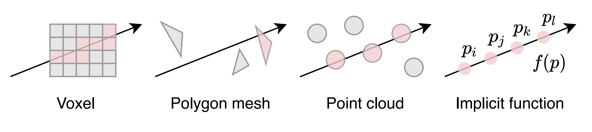
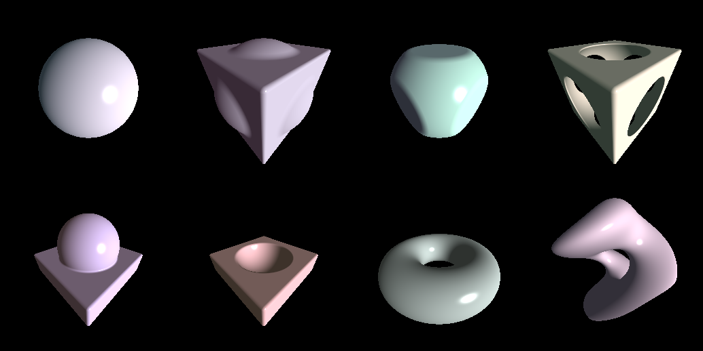

<!DOCTYPE html>
<html lang="en-us">
  <head>
    <title>Differentiable Sphere Tracing | Hiroki Sakuma</title>

    <meta charset="utf-8">
<meta http-equiv="X-UA-Compatible" content="IE=edge,chrome=1">    
<meta name="viewport" content="width=device-width,minimum-scale=1">
<meta name="description" content="最近好みの音楽が立て続けにリリースされたので，ちょっとまとめてみようと思う． 基本的にはいわゆるエレクトロニックミュージックを中心に聴いている">
<meta name="generator" content="Hugo 0.80.0" />


  <META NAME="ROBOTS" CONTENT="NOINDEX, NOFOLLOW">


<link rel="stylesheet" href="/css/style.css">
<link rel="shortcut icon" href="/images/favicon.ico" type="image/x-icon" />

 
    
<script type="application/javascript">
var doNotTrack = false;
if (!doNotTrack) {
	window.ga=window.ga||function(){(ga.q=ga.q||[]).push(arguments)};ga.l=+new Date;
	ga('create', 'UA-179623902-1', 'auto');
	
	ga('send', 'pageview');
}
</script>
<script async src='https://www.google-analytics.com/analytics.js'></script>


  </head>

  <body>
    <nav class="navigation">
	
		<a href="/"> <span class="arrow">←</span>Home</a>
	
	<a href="/posts">Archive</a>
	<a href="/tags">Tags</a>
	<a href="/about">About</a>

	

	
	  <a class="button" href="https://hirokisakuma.com/index.xml">Subscribe</a>
	
</nav>


    <main class="main">
      

<section id="single">
    <h1 class="title">Differentiable Sphere Tracing</h1>

    <div class="tip">
        <span>
          Oct 9, 2020 03:00
        </span>
        <span class="split">
          ·
        </span>
        <span>
          
            3832 words
          
        </span>
        <span class="split">
          ·
        </span>
        <span>
          8 minute read
        </span>
    </div>

    <div class="content">
      <p>CVPR'20の論文を眺めていたら，最近ハマっているGLSLと関連する面白そうな論文を見つけた．</p>
<ol>
<li><a 
    href="https://openaccess.thecvf.com/content_CVPR_2020/papers/Niemeyer_Differentiable_Volumetric_Rendering_Learning_Implicit_3D_Representations_Without_3D_Supervision_CVPR_2020_paper.pdf"
    
    
     
      target="_blank" 
      rel="noopener"
    
>
    Differentiable Volumetric Rendering: Learning Implicit 3D Representations without 3D Supervision [Niemeyer et al., CVPR'20]
</a></li>
<li><a 
    href="https://openaccess.thecvf.com/content_CVPR_2020/papers/Liu_DIST_Rendering_Deep_Implicit_Signed_Distance_Function_With_Differentiable_Sphere_CVPR_2020_paper.pdf"
    
    
     
      target="_blank" 
      rel="noopener"
    
>
    DIST: Rendering Deep Implicit Signed Distance Function with Differentiable Sphere Tracing [Liu et al., CVPR'20]
</a></li>
<li><a 
    href="https://openaccess.thecvf.com/content_CVPR_2020/papers/Jiang_SDFDiff_Differentiable_Rendering_of_Signed_Distance_Fields_for_3D_Shape_CVPR_2020_paper.pdf"
    
    
     
      target="_blank" 
      rel="noopener"
    
>
    SDFDiff: Differentiable Rendering of Signed Distance Fields for 3D Shape Optimization [Jiang et al., CVPR'20]
</a></li>
</ol>
<p>ここ最近のCVPRなどのコンピュータビジョンの学会では3Dの研究が爆発的に増えていて，ビジョンとグラフィクスを行ったり来たりしている研究も多い気がする．特に3D形状をどう表現するかという問題に焦点が当たっており，ボクセルやポイントクラウド，メッシュなどの離散表現ではなく，DNNでSigned Distance Function (SDF)をモデル化 <a 
    href="https://openaccess.thecvf.com/content_CVPR_2019/papers/Park_DeepSDF_Learning_Continuous_Signed_Distance_Functions_for_Shape_Representation_CVPR_2019_paper.pdf"
    
    
     
      target="_blank" 
      rel="noopener"
    
>
    [Park et al., CVPR'19]
</a> したり，Occupancy Functionという物体の内部か外部かを判別する2値分類器などをモデル化 <a 
    href="https://openaccess.thecvf.com/content_CVPR_2019/papers/Mescheder_Occupancy_Networks_Learning_3D_Reconstruction_in_Function_Space_CVPR_2019_paper.pdf"
    
    
     
      target="_blank" 
      rel="noopener"
    
>
    [Mescheder et al., CVPR'19]
</a> したりして，3D形状を陰関数表現しているのをよく見かける．</p>
<br>
<div align="center">

<p><span>Differentiable Rendering: A Survey [Kato et al., 2020]</span></p>
</div>
<br>
<p>またこれとは別にDifferentiable Rendering <a 
    href="https://openaccess.thecvf.com/content_cvpr_2018/papers/Kato_Neural_3D_Mesh_CVPR_2018_paper.pdf"
    
    
     
      target="_blank" 
      rel="noopener"
    
>
    [Kato et al., CVPR'18]
</a> という手法がある．これはレンダリングプロセスを微分可能にし，計算グラフに組み込むことで，3D教師データを必要とせず，2D教師データのみで3D形状の学習を行うことができるでものである．言い換えれば，どのような3D形状を学習すれば，それによってレンダリングされた結果が教師である2Dデータと一致するか，ということを学習する．例えばラスタライズベースのレンダリングプロセスの大部分は幾何計算であり微分可能であるが，ラスタライズだけは微分できない．そこで様々な近似勾配が提案されている．</p>
<br>
<div align="center">

<p><span>Differentiable Rendering: A Survey [Kato et al., 2020]</span></p>
</div>
<br>
<p>今回の3つの論文は全て，DNNで陰関数表現された3Dオブジェクトのレンダリングを微分可能な形でどう計算グラフに組み込むか，という問題を扱っている．陰関数表現された3Dオブジェクトのレンダリングはまさしくレイキャスティングである．レイキャスティングを微分可能な形で計算グラフに組み込めれば，レンダリングを通してDNNを最適化できる．</p>
<p>今回の目標は，まずこれらの論文を理解し，実装し，学習させる．次に学習されたネットワークをSigned Distance FunctionとしてGLSLにぶちこみそのままスフィアトレーシングでレンダリングしてやる．これで学習された3D形状をそのままレンダリングできるはずである．</p>
<p>まず今回の問題設定を定式化する．DVR [1] の手法が最も洗練されている気がしたこれをベースに理解を進めることにした．
まず3Dオブジェクトの形状は$$f_{\theta}: \mathbb{R}^{3} \times \mathcal{Z} \rightarrow \mathbb{R}$$で陰関数表現する．これはSigned Distance FunctionでもOccupancy Functionでも良い．
3Dオブジェクトのテクスチャは$$t_{\theta}: \mathbb{R}^{3} \times \mathcal{Z} \rightarrow \mathbb{R}^{3}$$で表現する．共に$z \in \mathcal{Z}$は3Dオブジェクトの形状，テクスチャを表す埋め込み表現であり，2D表現からDNNで獲得する．</p>
<p>よってレンダリングされた2D表現を$\hat{I}$とすると，以下のような最適化問題を解きたいわけである．
$$\theta^{*}=\text{argmin}_{\theta}\mathcal{L}(\hat{I}, I)$$</p>
<p>勾配法で最適化するとして
$$\cfrac{\partial{\mathcal{L}}}{\partial{\theta}}=\sum_{u}\cfrac{\partial{\mathcal{L}}}{\partial{\hat{I}_{u}}}\cfrac{\partial{\hat{I}_{u}}}{\partial{\theta}}$$</p>
<br>
<div align="center">

<p><span>DVR [Niemeyer et al., CVPR'20]</span></p>
</div>
<br>
<p>ここで$f_{\theta}$を用いてレイキャスティングした結果の交点を$\hat{p}$とすると，$\hat{I}_{u}=t_{\theta}(\hat{p})$であるから，
$$\cfrac{\partial{\hat{I}_{u}}}{\partial{\theta}}=\cfrac{\partial{t_{\theta}(\hat{p})}}{\partial{\theta}}+\cfrac{\partial{t_{\theta}(\hat{p})}}{\partial{\hat{p}}}\cdot\cfrac{\partial{\hat{p}}}{\partial{\theta}}$$</p>
<p>ここで$\cfrac{\partial{\hat{p}}}{\partial{\theta}}$は陽には計算できないが，$f_{\theta}(\hat{p})=0$の陰関数微分により，
$$\cfrac{\partial{f_{\theta}(\hat{p})}}{\partial{\theta}}+\cfrac{\partial{f_{\theta}(\hat{p})}}{\partial{\hat{p}}}\cdot\cfrac{\partial{\hat{p}}}{\partial{\theta}}=0$$</p>
<p>ここでレイを$r(d)=r_{0}+dw$と表すと，$\hat{p}=r(\hat{d})$と表せ，</p>
<p>$$\cfrac{\partial{\hat{p}}}{\partial{\theta}}=\cfrac{\partial{\hat{d}}}{\partial{\theta}}w$$</p>
<p>よって，
$$\cfrac{\partial{f_{\theta}(\hat{p})}}{\partial{\theta}}+\cfrac{\partial{f_{\theta}(\hat{p})}}{\partial{\hat{p}}}\cdot\cfrac{\partial{\hat{d}}}{\partial{\theta}}w=0$$</p>
<p>$$\cfrac{\partial{\hat{d}}}{\partial{\theta}}=-(\cfrac{\partial{f_{\theta}(\hat{p})}}{\partial{\hat{p}}} \cdot w)^{-1}\cfrac{\partial{f_{\theta}(\hat{p})}}{\partial{\theta}}$$</p>
<p>すなわち，
$$\cfrac{\partial{\hat{p}}}{\partial{\theta}}=-(\cfrac{\partial{f_{\theta}(\hat{p})}}{\partial{\hat{p}}} \cdot w)^{-1}\cfrac{\partial{f_{\theta}(\hat{p})}}{\partial{\theta}}w$$</p>
<p>これにより，レイキャスティングによる交点$\hat{p}$を微分可能な形で求める必要はない．
例えばDVR [1] ではレイ上の点をサンプリングして，Occupancy Networkの出力が初めて0.5を跨いだ点（Occupancy Networkは与えられた点が3Dオブジェクト内部に存在する確率を出力するので，出力が0.5となる点はオブジェクト表面に存在すると推定されたことになる）を交点$\hat{p}$としている．</p>
<p>他にもDIST [2], SDFDiff [3] ではスフィアトレーシングを用いてレンダリングしており，微分可能な形で交点$\hat{p}$を求める工夫をしている．</p>
<br>
<div align="center">


<p><span>DIST [Liu et al., CVPR'20]</span></p>
</div>
<br>
<p>DIST [2] では以下のような戦略を用いてスフィアトレーシングを加速させている．
イテレーション毎に計算グラフを構築しているので計算量が多く，そのため近似勾配を用いて対処している．
イテレーション毎に素直にDNNを通して距離を計算していては，計算グラフが肥大化し，やがてVRAMを食い潰すだろう．</p>
<br>
<div align="center">

<p><span>DIST [Liu et al., CVPR'20]</span></p>
</div>
<br>
<p>SDFDiff [3] は，スフィアトレーシングにおける最後のイテレーションのみ計算グラフを構築することで，微分可能な形で交点$\hat{p}$を求めている．コアのアイデアはこんな感じである．</p>
<div class="highlight"><pre style="color:#f8f8f2;background-color:#272822;-moz-tab-size:4;-o-tab-size:4;tab-size:4"><code class="language-python" data-lang="python"><span style="color:#75715e"># --- ray marching --- #</span>

<span style="color:#66d9ef">with</span> torch<span style="color:#f92672">.</span>no_grad():
    <span style="color:#66d9ef">while</span> <span style="color:#f92672">not</span> converged:
        p <span style="color:#f92672">+=</span> SDF(p) <span style="color:#f92672">*</span> v

<span style="color:#75715e"># make only the last step differentiable</span>
<span style="color:#66d9ef">with</span> torch<span style="color:#f92672">.</span>enable_grad():
    p <span style="color:#f92672">+=</span> SDF(p) <span style="color:#f92672">*</span> v
</code></pre></div><p>この論文のSigned Distance Functionはボクセルベースなので，任意の点における距離は近傍ボクセルの線形補間で求めている．</p>
<p>コアのアイデアは多分理解できたので，実装に移る．
今回は DVR [1] をベースにOccupancy FunctionではなくSigned Distance FunctionをDNNでモデル化した．
学習の流れとしては，以下のように行った．論文の再現は目的ではないので，実験設定は異なっている．
自分なりに理解しやすく，まずはなるべくシンプルになるように書いたので，実装は元論文とはだいぶ違うかもしれない．
タスクとしては&quot;Single-View Reconstruction with Multi-View
Supervision&quot;を扱う．</p>
<ol>
<li>3Dオブジェクトをランダムにサンプリングしたカメラ，ライト，マテリアルを用いてレンダリングし，これをGTとする．</li>
<li>Signed Distance Function $f_{\theta}$ を用いて，スフィアトレーシングにより3Dオブジェクトとの交点を推定する．法線は陰関数の勾配で与えられるので，素直に微分するか，有限差分で近似するかして求める．</li>
<li>GTのカメラ，ライト，マテリアルを用いてphongライティングにより推定された3Dオブジェクトをレンダリングする．またこの時使用されるテクスチャは $t_{\theta}$ により推定する．</li>
<li>Backpropにより，各パラメータにおける勾配を求める．スフィアトレーシングによる交点の微分は陰関数微分を用いて求める．</li>
</ol>
<p>今回はGTのレンダリングや，反射モデル，幾何変換のために<a 
    href="https://github.com/facebookresearch/pytorch3d"
    
    
     
      target="_blank" 
      rel="noopener"
    
>
    PyTorch3D
</a>を用いた．データセットとしては<a 
    href="https://www.shapenet.org/"
    
    
     
      target="_blank" 
      rel="noopener"
    
>
    ShapeNetCore
</a>を用いた．
このShapeNetCore，3Dモデルが汚いためか，普通にphongシェーディングすると，めちゃくちゃなシェーディングになった．
なので，GTのレンダリングにはとりあえずflatシェーディングを用いている．</p>
<br>
<div align="center">


<p><span>ShapeNetCore</span></p>
</div>
<br>
<p>まずは普通のスフィアトレーシングをPyTorchで実装してみる．
カメラやライトはPyTorch3Dのクラスを用いている．
PyTorch3Dはかなり新しいライブラリでまだ洗練されていない部分も多く，結構苦労した．
特にテンソルの形状のミスマッチに起因するエラーが多く，自分で書き直していかないといけなかった．
とはいえ，PyTorchにレンダリングのパイプラインを自然に組み込めるのはとてもありがたいことである．</p>
<div class="highlight"><pre style="color:#f8f8f2;background-color:#272822;-moz-tab-size:4;-o-tab-size:4;tab-size:4"><code class="language-python" data-lang="python"><span style="color:#66d9ef">def</span> <span style="color:#a6e22e">sphere_tracing</span>(
    signed_distance_function, 
    positions, 
    directions, 
    foreground_masks, 
    num_iterations, 
    convergence_threshold,
):
    <span style="color:#66d9ef">for</span> i <span style="color:#f92672">in</span> range(num_iterations):
        signed_distances <span style="color:#f92672">=</span> signed_distance_function(positions)
        <span style="color:#66d9ef">if</span> i:
            positions <span style="color:#f92672">=</span> torch<span style="color:#f92672">.</span>where(converged, positions, positions <span style="color:#f92672">+</span> directions <span style="color:#f92672">*</span> signed_distances)
        <span style="color:#66d9ef">else</span>:
            positions <span style="color:#f92672">=</span> positions <span style="color:#f92672">+</span> directions <span style="color:#f92672">*</span> signed_distances
        converged <span style="color:#f92672">=</span> torch<span style="color:#f92672">.</span>abs(signed_distances) <span style="color:#f92672">&lt;</span> convergence_threshold
        <span style="color:#66d9ef">if</span> torch<span style="color:#f92672">.</span>all(converged[foreground_masks] <span style="color:#66d9ef">if</span> foreground_masks <span style="color:#66d9ef">else</span> converged):
            <span style="color:#66d9ef">break</span>

    <span style="color:#66d9ef">return</span> positions, converged


<span style="color:#66d9ef">def</span> <span style="color:#a6e22e">compute_normal</span>(signed_distance_function, positions, finite_difference_epsilon):

    <span style="color:#66d9ef">if</span> finite_difference_epsilon:
        finite_difference_epsilon <span style="color:#f92672">=</span> positions<span style="color:#f92672">.</span>new_tensor(finite_difference_epsilon)
        finite_difference_epsilon <span style="color:#f92672">=</span> finite_difference_epsilon<span style="color:#f92672">.</span>reshape(<span style="color:#ae81ff">1</span>, <span style="color:#ae81ff">1</span>, <span style="color:#ae81ff">1</span>)
        finite_difference_epsilon_x <span style="color:#f92672">=</span> nn<span style="color:#f92672">.</span>functional<span style="color:#f92672">.</span>pad(finite_difference_epsilon, (<span style="color:#ae81ff">0</span>, <span style="color:#ae81ff">2</span>))
        finite_difference_epsilon_y <span style="color:#f92672">=</span> nn<span style="color:#f92672">.</span>functional<span style="color:#f92672">.</span>pad(finite_difference_epsilon, (<span style="color:#ae81ff">1</span>, <span style="color:#ae81ff">1</span>))
        finite_difference_epsilon_z <span style="color:#f92672">=</span> nn<span style="color:#f92672">.</span>functional<span style="color:#f92672">.</span>pad(finite_difference_epsilon, (<span style="color:#ae81ff">2</span>, <span style="color:#ae81ff">0</span>))
        normals_x <span style="color:#f92672">=</span> signed_distance_function(positions <span style="color:#f92672">+</span> finite_difference_epsilon_x) <span style="color:#f92672">-</span> signed_distance_function(positions <span style="color:#f92672">-</span> finite_difference_epsilon_x)
        normals_y <span style="color:#f92672">=</span> signed_distance_function(positions <span style="color:#f92672">+</span> finite_difference_epsilon_y) <span style="color:#f92672">-</span> signed_distance_function(positions <span style="color:#f92672">-</span> finite_difference_epsilon_y)
        normals_z <span style="color:#f92672">=</span> signed_distance_function(positions <span style="color:#f92672">+</span> finite_difference_epsilon_z) <span style="color:#f92672">-</span> signed_distance_function(positions <span style="color:#f92672">-</span> finite_difference_epsilon_z)
        normals <span style="color:#f92672">=</span> torch<span style="color:#f92672">.</span>cat((normals_x, normals_y, normals_z), dim<span style="color:#f92672">=-</span><span style="color:#ae81ff">1</span>)

    <span style="color:#66d9ef">else</span>:
        create_graph <span style="color:#f92672">=</span> positions<span style="color:#f92672">.</span>requires_grad
        positions<span style="color:#f92672">.</span>requires_grad_(True)
        <span style="color:#66d9ef">with</span> torch<span style="color:#f92672">.</span>enable_grad():
            signed_distances <span style="color:#f92672">=</span> signed_distance_function(positions)
            normals, <span style="color:#f92672">=</span> autograd<span style="color:#f92672">.</span>grad(
                outputs<span style="color:#f92672">=</span>signed_distances, 
                inputs<span style="color:#f92672">=</span>positions, 
                grad_outputs<span style="color:#f92672">=</span>torch<span style="color:#f92672">.</span>ones_like(signed_distances),
                create_graph<span style="color:#f92672">=</span>create_graph,
            )
            
    <span style="color:#66d9ef">return</span> normals


<span style="color:#66d9ef">def</span> <span style="color:#a6e22e">phong_shading</span>(positions, normals, textures, cameras, lights, materials):
    light_diffuse_color <span style="color:#f92672">=</span> lights<span style="color:#f92672">.</span>diffuse(
        normals<span style="color:#f92672">=</span>normals, 
        points<span style="color:#f92672">=</span>positions,
    )
    light_specular_color <span style="color:#f92672">=</span> lights<span style="color:#f92672">.</span>specular(
        normals<span style="color:#f92672">=</span>normals,
        points<span style="color:#f92672">=</span>positions,
        camera_position<span style="color:#f92672">=</span>cameras<span style="color:#f92672">.</span>get_camera_center(),
        shininess<span style="color:#f92672">=</span>materials<span style="color:#f92672">.</span>shininess,
    )
    ambient_colors <span style="color:#f92672">=</span> materials<span style="color:#f92672">.</span>ambient_color <span style="color:#f92672">*</span> lights<span style="color:#f92672">.</span>ambient_color
    diffuse_colors <span style="color:#f92672">=</span> materials<span style="color:#f92672">.</span>diffuse_color <span style="color:#f92672">*</span> light_diffuse_color
    specular_colors <span style="color:#f92672">=</span> materials<span style="color:#f92672">.</span>specular_color <span style="color:#f92672">*</span> light_specular_color
    <span style="color:#75715e"># NOTE: pytorch3d.renderer.phong_shading should be fixed as well</span>
    <span style="color:#66d9ef">assert</span> diffuse_colors<span style="color:#f92672">.</span>shape <span style="color:#f92672">==</span> specular_colors<span style="color:#f92672">.</span>shape
    ambient_colors <span style="color:#f92672">=</span> ambient_colors<span style="color:#f92672">.</span>reshape(<span style="color:#f92672">-</span><span style="color:#ae81ff">1</span>, <span style="color:#f92672">*</span>[<span style="color:#ae81ff">1</span>] <span style="color:#f92672">*</span> len(diffuse_colors<span style="color:#f92672">.</span>shape[<span style="color:#ae81ff">1</span>:<span style="color:#f92672">-</span><span style="color:#ae81ff">1</span>]), <span style="color:#ae81ff">3</span>)
    colors <span style="color:#f92672">=</span> (ambient_colors <span style="color:#f92672">+</span> diffuse_colors) <span style="color:#f92672">*</span> textures <span style="color:#f92672">+</span> specular_colors
    <span style="color:#66d9ef">return</span> colors
</code></pre></div><p>上記の関数を用いて，Constructive Solid Geometry (CSG) をレンダリングしてみた．
完全なコードはここに置いてある: <a 
    href="https://github.com/skmhrk1209/Sphere-Tracing-PyTorch3D"
    
    
     
      target="_blank" 
      rel="noopener"
    
>
    [code]
</a></p>
<br>
<div align="center">

<p><span>Constructive Solid Geometry (CSG)</span></p>
</div>
<br>
<p>各プリミティブに対応するSigned Distance Functionは，まだその導出を理解していないものも多く，一度ちゃんと勉強したいと思う．</p>
<p>一応スフィアトレーシングは動作していそうなので，これを自動微分の枠組みに組み込む．
基本的には上記の<code>sphere_tracing(...)</code>を<code>torch.autograd.Function.forward(...)</code>に移植し，
<code>torch.autograd.Function.backward(...)</code>を陰関数微分にしたがって実装すれば良さそうである．</p>
<div class="highlight"><pre style="color:#f8f8f2;background-color:#272822;-moz-tab-size:4;-o-tab-size:4;tab-size:4"><code class="language-python" data-lang="python"><span style="color:#66d9ef">class</span> <span style="color:#a6e22e">SphereTracing</span>(autograd<span style="color:#f92672">.</span>Function):

    <span style="color:#a6e22e">@staticmethod</span>
    <span style="color:#66d9ef">def</span> <span style="color:#a6e22e">forward</span>(
        ctx, 
        signed_distance_function, 
        positions, 
        directions, 
        foreground_masks, 
        num_iterations, 
        convergence_threshold,
        <span style="color:#f92672">*</span>parameters,
    ):
        <span style="color:#75715e"># vanilla sphere tracing</span>
        <span style="color:#66d9ef">with</span> torch<span style="color:#f92672">.</span>no_grad():
            positions, converged <span style="color:#f92672">=</span> sphere_tracing(
                signed_distance_function<span style="color:#f92672">=</span>signed_distance_function, 
                positions<span style="color:#f92672">=</span>positions, 
                directions<span style="color:#f92672">=</span>directions, 
                foreground_masks<span style="color:#f92672">=</span>foreground_masks,
                num_iterations<span style="color:#f92672">=</span>num_iterations, 
                convergence_threshold<span style="color:#f92672">=</span>convergence_threshold,
            )
            positions <span style="color:#f92672">=</span> torch<span style="color:#f92672">.</span>where(converged, positions, torch<span style="color:#f92672">.</span>zeros_like(positions))

        <span style="color:#75715e"># save tensors for backward pass</span>
        ctx<span style="color:#f92672">.</span>save_for_backward(positions, directions, foreground_masks, converged)
        ctx<span style="color:#f92672">.</span>signed_distance_function <span style="color:#f92672">=</span> signed_distance_function
        ctx<span style="color:#f92672">.</span>parameters <span style="color:#f92672">=</span> parameters

        <span style="color:#66d9ef">return</span> positions, converged

    <span style="color:#a6e22e">@staticmethod</span>
    <span style="color:#66d9ef">def</span> <span style="color:#a6e22e">backward</span>(ctx, grad_outputs, <span style="color:#f92672">*</span>_):
        
        <span style="color:#75715e"># restore tensors from forward pass</span>
        positions, directions, foreground_masks, converged <span style="color:#f92672">=</span> ctx<span style="color:#f92672">.</span>saved_tensors
        signed_distance_function <span style="color:#f92672">=</span> ctx<span style="color:#f92672">.</span>signed_distance_function
        parameters <span style="color:#f92672">=</span> ctx<span style="color:#f92672">.</span>parameters

        <span style="color:#75715e"># compute gradients using implicit differentiation</span>
        <span style="color:#66d9ef">with</span> torch<span style="color:#f92672">.</span>enable_grad():
            positions <span style="color:#f92672">=</span> positions<span style="color:#f92672">.</span>detach()
            positions<span style="color:#f92672">.</span>requires_grad_(True)
            signed_distances <span style="color:#f92672">=</span> signed_distance_function(positions)
            grad_positions, <span style="color:#f92672">=</span> autograd<span style="color:#f92672">.</span>grad(
                outputs<span style="color:#f92672">=</span>signed_distances, 
                inputs<span style="color:#f92672">=</span>positions, 
                grad_outputs<span style="color:#f92672">=</span>torch<span style="color:#f92672">.</span>ones_like(signed_distances), 
                retain_graph<span style="color:#f92672">=</span>True,
            )
            grad_outputs_dot_directions <span style="color:#f92672">=</span> torch<span style="color:#f92672">.</span>sum(grad_outputs <span style="color:#f92672">*</span> directions, dim<span style="color:#f92672">=-</span><span style="color:#ae81ff">1</span>, keepdim<span style="color:#f92672">=</span>True)
            grad_positions_dot_directions <span style="color:#f92672">=</span> torch<span style="color:#f92672">.</span>sum(grad_positions <span style="color:#f92672">*</span> directions, dim<span style="color:#f92672">=-</span><span style="color:#ae81ff">1</span>, keepdim<span style="color:#f92672">=</span>True)
            <span style="color:#75715e"># NOTE: avoid division by zero</span>
            grad_positions_dot_directions <span style="color:#f92672">=</span> torch<span style="color:#f92672">.</span>where(
                grad_positions_dot_directions <span style="color:#f92672">&gt;</span> <span style="color:#ae81ff">0</span>,
                torch<span style="color:#f92672">.</span>max(grad_positions_dot_directions, torch<span style="color:#f92672">.</span>full_like(grad_positions_dot_directions, <span style="color:#f92672">+</span><span style="color:#ae81ff">1e-6</span>)),
                torch<span style="color:#f92672">.</span>min(grad_positions_dot_directions, torch<span style="color:#f92672">.</span>full_like(grad_positions_dot_directions, <span style="color:#f92672">-</span><span style="color:#ae81ff">1e-6</span>)),
            )
            grad_outputs <span style="color:#f92672">=</span> <span style="color:#f92672">-</span>grad_outputs_dot_directions <span style="color:#f92672">/</span> grad_positions_dot_directions
            <span style="color:#75715e"># NOTE: zero gradient for unconverged points </span>
            grad_outputs <span style="color:#f92672">=</span> torch<span style="color:#f92672">.</span>where(converged, grad_outputs, torch<span style="color:#f92672">.</span>zeros_like(grad_outputs))
            grad_parameters <span style="color:#f92672">=</span> autograd<span style="color:#f92672">.</span>grad(
                outputs<span style="color:#f92672">=</span>signed_distances, 
                inputs<span style="color:#f92672">=</span>parameters, 
                grad_outputs<span style="color:#f92672">=</span>grad_outputs, 
                retain_graph<span style="color:#f92672">=</span>True,
            )

        <span style="color:#66d9ef">return</span> (None, None, None, None, None, None, <span style="color:#f92672">*</span>grad_parameters)
</code></pre></div><p>これで一応学習させてみるが，どうせ最初からうまくはいかないので，適宜修正を加えていくことになるだろう．
損失関数は単純なL1 lossを用いてみたが，SDFDiff [3] で提案されているSigned Distance Functionの勾配やラプラシアンに関する正則化項を入れたり，他にも実装レベルの様々なトリックが必要になってくるかもしれない．</p>
<p>結果はうまくいき次第載せようと思う．</p>

    </div>

    
        <div class="tags">
            
                <a href="https://hirokisakuma.com/tags/neural-network">neural network</a>
            
                <a href="https://hirokisakuma.com/tags/computer-graphics">computer graphics</a>
            
                <a href="https://hirokisakuma.com/tags/differentiable-renderirng">differentiable renderirng</a>
            
                <a href="https://hirokisakuma.com/tags/sphere-tracing">sphere tracing</a>
            
                <a href="https://hirokisakuma.com/tags/pytorch">pytorch</a>
            
                <a href="https://hirokisakuma.com/tags/pytorch3d">pytorch3d</a>
            
        </div>
    
    
     
  <div id="comment">
    
    <div id="disqus_thread"></div>
<script type="application/javascript">
    var disqus_config = function () {
    
    
    
    };
    (function() {
        if (["localhost", "127.0.0.1"].indexOf(window.location.hostname) != -1) {
            document.getElementById('disqus_thread').innerHTML = 'Disqus comments not available by default when the website is previewed locally.';
            return;
        }
        var d = document, s = d.createElement('script'); s.async = true;
        s.src = '//' + "https-hirokisakuma-com" + '.disqus.com/embed.js';
        s.setAttribute('data-timestamp', +new Date());
        (d.head || d.body).appendChild(s);
    })();
</script>
<noscript>Please enable JavaScript to view the <a href="https://disqus.com/?ref_noscript">comments powered by Disqus.</a></noscript>
<a href="https://disqus.com" class="dsq-brlink">comments powered by <span class="logo-disqus">Disqus</span></a>
  </div>


</section>


    </main>
    
    <footer id="footer">
    
        <div id="social">


    <a class="symbol" href="https://github.com/skmhrk1209" target="_blank">
        
        <svg fill="#bbbbbb" width="28" height="28"  viewBox="0 0 72 72" version="1.1" xmlns="http://www.w3.org/2000/svg" xmlns:xlink="http://www.w3.org/1999/xlink">
    
    <title>Github</title>
    <desc>Created with Sketch.</desc>
    <defs></defs>
    <g id="Page-1" stroke="none" stroke-width="1" fill="none" fill-rule="evenodd">
        <g id="Social-Icons---Rounded-Black" transform="translate(-264.000000, -939.000000)">
            <g id="Github" transform="translate(264.000000, 939.000000)">
                <path d="M8,72 L64,72 C68.418278,72 72,68.418278 72,64 L72,8 C72,3.581722 68.418278,-8.11624501e-16 64,0 L8,0 C3.581722,8.11624501e-16 -5.41083001e-16,3.581722 0,8 L0,64 C5.41083001e-16,68.418278 3.581722,72 8,72 Z" id="Rounded" fill="#bbbbbb"></path>
                <path d="M35.9985,13 C22.746,13 12,23.7870921 12,37.096644 C12,47.7406712 18.876,56.7718301 28.4145,59.9584121 C29.6145,60.1797862 30.0525,59.4358488 30.0525,58.7973276 C30.0525,58.2250681 30.0315,56.7100863 30.0195,54.6996482 C23.343,56.1558981 21.9345,51.4693938 21.9345,51.4693938 C20.844,48.6864054 19.2705,47.9454799 19.2705,47.9454799 C17.091,46.4500754 19.4355,46.4801943 19.4355,46.4801943 C21.843,46.6503662 23.1105,48.9634994 23.1105,48.9634994 C25.2525,52.6455377 28.728,51.5823398 30.096,50.9649018 C30.3135,49.4077535 30.9345,48.3460615 31.62,47.7436831 C26.2905,47.1352808 20.688,45.0691228 20.688,35.8361671 C20.688,33.2052792 21.6225,31.0547881 23.1585,29.3696344 C22.911,28.7597262 22.0875,26.3110578 23.3925,22.9934585 C23.3925,22.9934585 25.4085,22.3459017 29.9925,25.4632101 C31.908,24.9285993 33.96,24.6620468 36.0015,24.6515052 C38.04,24.6620468 40.0935,24.9285993 42.0105,25.4632101 C46.5915,22.3459017 48.603,22.9934585 48.603,22.9934585 C49.9125,26.3110578 49.089,28.7597262 48.8415,29.3696344 C50.3805,31.0547881 51.309,33.2052792 51.309,35.8361671 C51.309,45.0917119 45.6975,47.1292571 40.3515,47.7256117 C41.2125,48.4695491 41.9805,49.9393525 41.9805,52.1877301 C41.9805,55.4089489 41.9505,58.0067059 41.9505,58.7973276 C41.9505,59.4418726 42.3825,60.1918338 43.6005,59.9554002 C53.13,56.7627944 60,47.7376593 60,37.096644 C60,23.7870921 49.254,13 35.9985,13" fill="#FFFFFF"></path>
            </g>
        </g>
    </g>
</svg>
    </a>


</div>

    

    <p class="copyright">
    
       © Copyright 
       2021 
       <span class="split">
        <svg fill="#bbbbbb" width="15" height="15" version="1.1" id="heart-15" xmlns="http://www.w3.org/2000/svg" width="15px" height="15px" viewBox="0 0 15 15">
  <path d="M13.91,6.75c-1.17,2.25-4.3,5.31-6.07,6.94c-0.1903,0.1718-0.4797,0.1718-0.67,0C5.39,12.06,2.26,9,1.09,6.75&#xA;&#x9;C-1.48,1.8,5-1.5,7.5,3.45C10-1.5,16.48,1.8,13.91,6.75z"/>
</svg>
       </span>
       Hiroki Sakuma
    
    </p>
    <p class="powerby">
        Powered by <a href="http://www.gohugo.io/">Hugo</a> Theme By <a href="https://github.com/nodejh/hugo-theme-cactus-plus">nodejh</a>
    </p>
</footer>

<script type="text/x-mathjax-config">
MathJax.Hub.Config({
    tex2jax: {
    inlineMath: [ ['$','$'], ['\\(','\\)'] ],
    processEscapes: true
    }
});
</script>
<script type="text/javascript"
    src="https://cdn.mathjax.org/mathjax/latest/MathJax.js?config=TeX-AMS-MML_HTMLorMML">
</script>

  </body>
</html>
